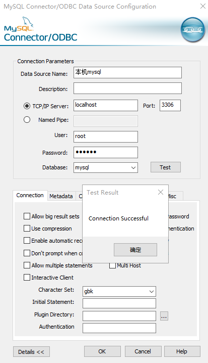

9.7 常见问题
在使用R包连接数据库时有些常见的问题，整理如下：
9.7.1 乱码问题
R中中文乱码问题一直都很麻烦，并且常常遇见，尤其是使用win系统时。
- MS SQL SERVER 乱码
修改encoding参数，在win系统下，可以考虑使用RODBC包连接查询数据库，因为该包将自动转换编码，不会存在乱码问题。但是上传效率奇慢，为了减少包依赖保持代码一致性使用odbc连接数据库时遇到乱码，在连接数据库时设定encoding即可。
# win
con_spb <- dbConnect(odbc(),
.connection_string =
"driver={ SQLServer};server=172.16.88.2;database=spb;uid=zhongyf;pwd=Zyf123456",
timeout = 10, timezone = "Asia/Shanghai", encoding = "gbk"
)
# linux
con_spb <- dbConnect(odbc(),
.connection_string =
"driver={ODBC Driver 17 for SQL Server};server=172.16.88.2;database=spb;uid=zhongyf;pwd=Zyf123456",
timeout = 10, timezone = "Asia/Shanghai", encoding = "utf8"
)- MySQL乱码
1.代码修改
#执行查询语句前执行
dbSendQuery(con,'SET NAMES gbk')2.ODBC配置
如果是通过ODBC数据源连接,可通过配置需改,如下所示：

ODBC配置截图
9.7.2 无法连接问题
首先需要装mysql的驱动,确保RMySQL成功安装 如果是测试自己安装的mysql,可以先用Navicat连接,如果出现Authentication plugin ‘caching_sha2_password’ cannot be loaded的错误。
可能是由于 mysql8 之前的版本中加密规则是mysql_native_password,而在mysql8之后,加密规则是caching_sha2_password,通过修改加密规则可解决无法连接问题。
--cmd 登录本地数据
mysql -u root -p
--输入密码
password:
--执行命令
ALTER USER 'root'@'localhost' IDENTIFIED BY 'password' PASSWORD EXPIRE NEVER; #修改加密规则
---ALTER USER 'root'@'%' IDENTIFIED BY 'password' PASSWORD EXPIRE NEVER; 看账号权限注意与上面的区别
ALTER USER 'root'@'localhost' IDENTIFIED WITH mysql_native_password BY 'password'; #更新一下用户的密码 9.7.3 远程连接
当你需要远程连接时，需要确保数据库的远程连接已经开启。在数据库中开启某账户远程连接权限,在公司的话，数据库连接问题咨询公司的IT人员。自己个人电脑上安装的MS SQL SERVER数据库需要自行开启远程连接。
另外如果是云服务器上搭建的数据库,需要开启数据库端口，如Mysql默认端口3306;如果是阿里云的Rds数据库,找DBA管理员要数据库地址以及端口信息。